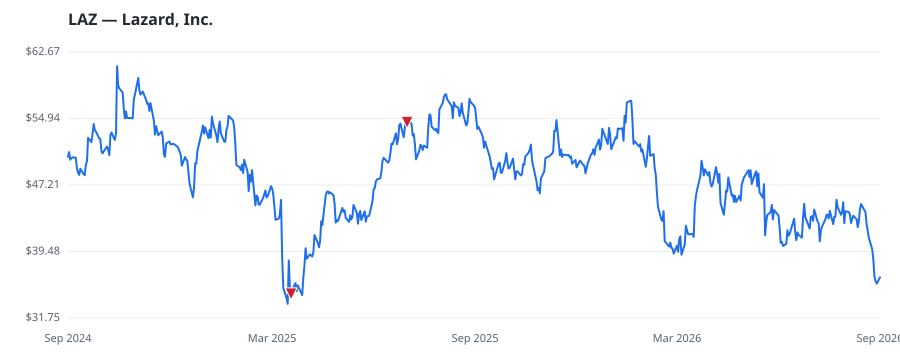

bullish · bearish · n/a — dots: price>SMA10 · SMA10>SMA50 · SMA50>SMA200 · up>down volume (20d)
Diversified Financials · mid cap

Lazard Inc is a financial advisory and asset management firm with operations in North and South America, Europe, the Middle East, Asia, and Australia. Lazard provides advice on mergers and acquisitions, capital markets and capital solutions, restructuring and liability management, geopolitics, and other strategic matters, as well as asset management and investment solutions to institutions, corporations, governments, partnerships, family offices, and high net worth individuals. Geographically, the company earns key revenue in the Americas, EMEA then Asia-Pacific. INVESTMENT ADVICE · website
| Revenue | $3.2B | Net income | $236.8M |
|---|---|---|---|
| Operating income | $327.6M | Diluted EPS | $2.17 |
| Assets | $4.9B | Equity | $873.7M |